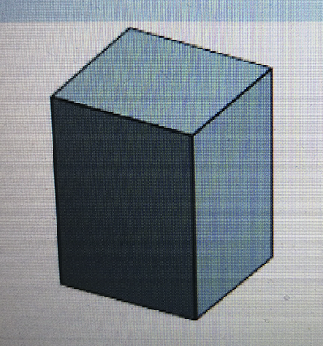

Her kan du orientere dig om mine projekter.
I et større projekt for en tøjbutik har jeg stået for kodning af to hjemmesider, lave designmanual, logo, sketches, wireframes og mockups samt gennemføre test.
Hjemmeside Landing pageJeg har lavet en "frisørapp" i react, som fungerer på den måde, at når man klikker på knappen, lægges der 200 til.
Jeg har undervejs i mine studier prøvet kræfter med at skulle overtage en hjemmeside udviklet af andre og så videreudvikle den. Dette har givet mig en forståelse for vigtigheden af kodekommentarer.
HjemmesideJeg har også prøvet at arbejde med high order javascript funktioner. Jeg har lavet en codepen, hvor jeg bruger map funktionen til at sortere firmaer.
CodepenHer ses et trafiklys kodet med javascript, som kører på en microbit.Dette projekt gav mig en indsigt i, at javascript kan bruges til andet at kode hjemmesider. Dette var mit første møde med IOT, nemlig ved digitalt at skrive en kode, der så efterfølgende kører på et fysisk eksemplar.
Jeg har prøvet at arbejde med eyetracking. Eyetracking går ud på at måle hvor på en hjemmeside en bruger rent faktisk orienterer sig med øjnene.Nedenunder ses et eksempel på eyetracking.
Jeg også prøvet at arbejde med 3d printere og programmet onshape, der bruges til at lave skitser til 3d printere. Nedenunder ses en skitse, jeg har lavet i onshape.
